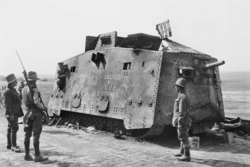
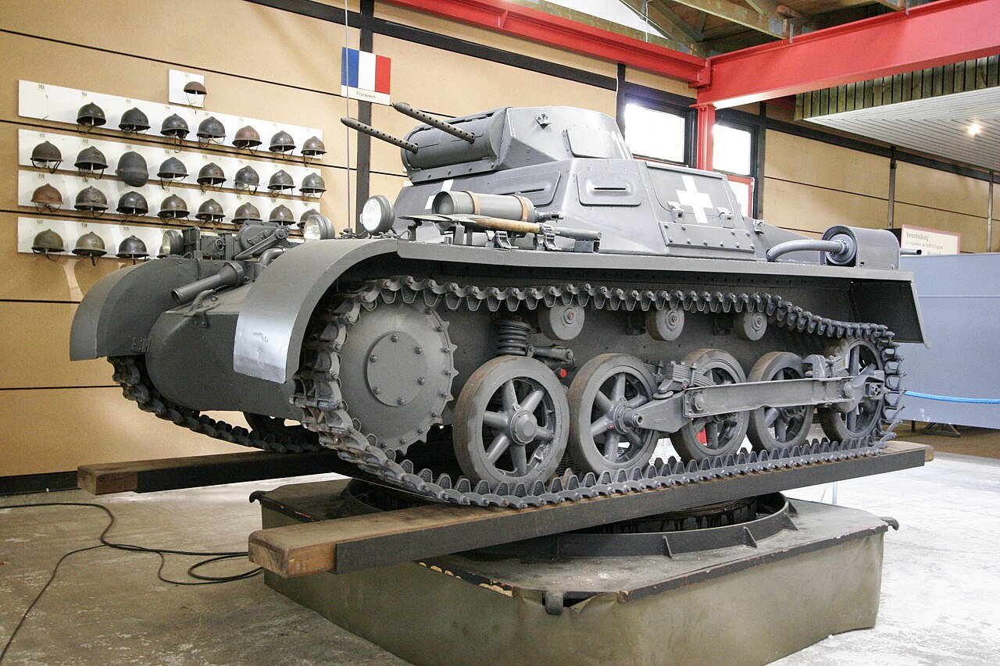
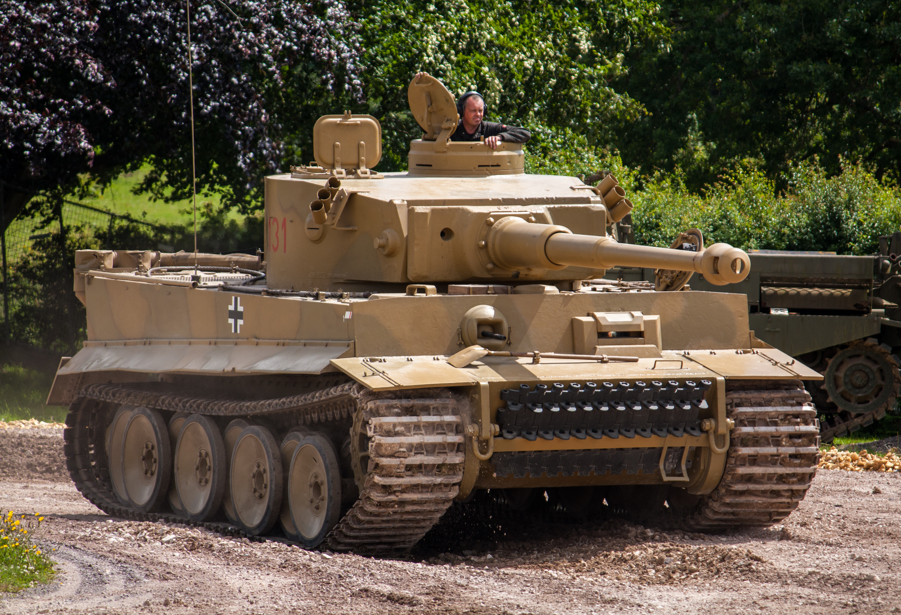

The A7V was Germany's first operational tank. The A7V looked very different from later tanks. It was a large armored box mounted on tracks, with a tall profile that made it easy to spot on the battlefield. First saw action in 1918. Participated in the Second Battle of Villers-Bretonneux, which included the first tank-versus-tank combat in history.
The Panzer I was Germany's first mass-produced tank of the Nazi era and served as a crucial training and development vehicle for the future Panzer force. After the treaty of Versailles, Germany was banned from having any tanks, so they turned towards the Soviet Union where they had a joint development and study of tanks. To import it from Soviet, Germany had to lable Panzer 1 as a tractor to bypass the treaty.
The Tiger I was one of the most famous tanks of World War II. Introduced in 1942, it was designed to defeat enemy tanks at long range and withstand heavy fire. Tiger's powerful 88 mm gun could destroy many Allied tanks before they could effectively return fire. Its thick armor made it difficult to knock out from the front. The reason for development of a Tiger was based on soviet armor which germany often couldn't penetrate. The Tiger fought on both the Eastern and Western Fronts and became a symbol of German armored power, Despite that, Tigers were often outnumbered tanks such as the Soviet T-34 and the American M4 Sherman.